Replace a feature
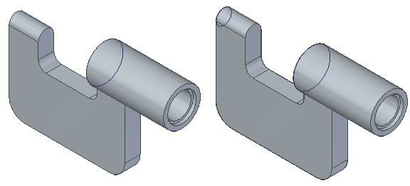
In the next few steps, replace a round with a protrusion that is tangent to an edge, then edit the value of a dimension to see how the protrusion remains tangent.
-
In PathFinder, right-click Round 1 and click Delete on the menu.
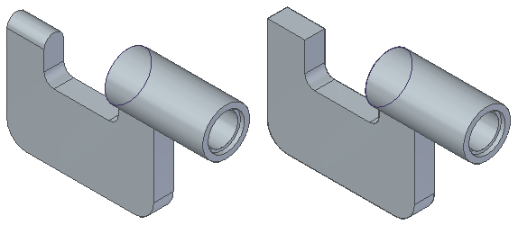
To make it easier to position the hole feature, rotate the view so that the orientation is similar to the illustration.
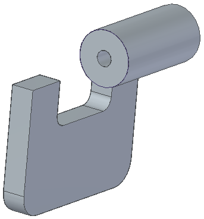
Choose the Home tab→Sketch group→Circle by Center Point command  .
.
Ensure that the Select option is set to Coincident Plane.
Position the cursor over the planar face shown in the illustration and then click.
If necessary, press N until the bottom edge of the model face displays as shown below.
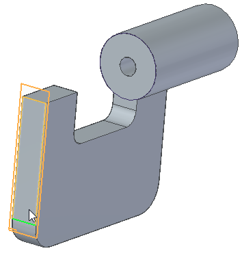
On the Circle by Center Point command bar, in the Diameter box, type 10, and then press Enter.
Position the cursor over the middle of the top edge, and when the midpoint relationship
indicator  displays adjacent to the cursor, click.
displays adjacent to the cursor, click.
Right-click to place the circle.
Choose the Home tab→Relate group→Tangent command  .
.
Position the cursor on the edge as shown in the illustration and click.
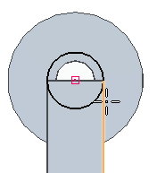
Position the cursor on the circle as shown in the illustration and click.
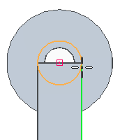
On the Home tab→Close group, choose the Close Sketch command  .
.
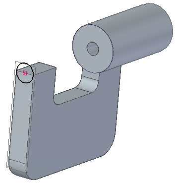
On the command bar, click Finish.
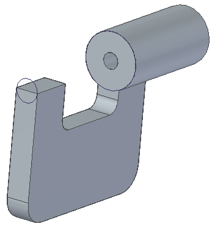
Choose the Home tab→Solids group→Extrude command.
On the Extrude command bar, set the Add/Cut option to Add.
On the Extrude command bar, make sure the Select from Sketch option is set.
Highlight the sketch circle as the element you want to extrude, click, and then click Accept.
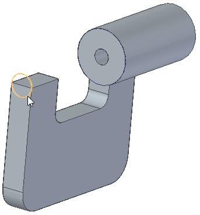
On the command bar, make sure the Finite Extent option is selected and position the cursor as shown
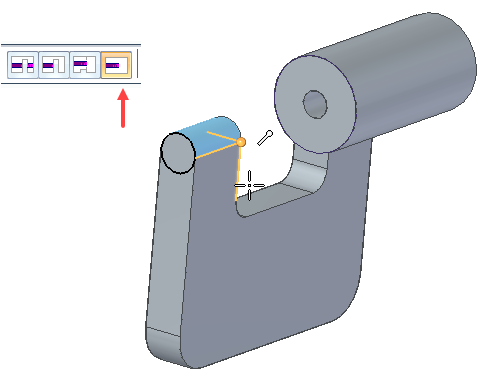
On the command bar, click Finish.
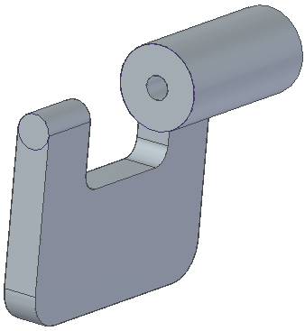
Press Esc to dismiss the Extrude command.
Press Ctrl+I to rotate the view to an isometric view.
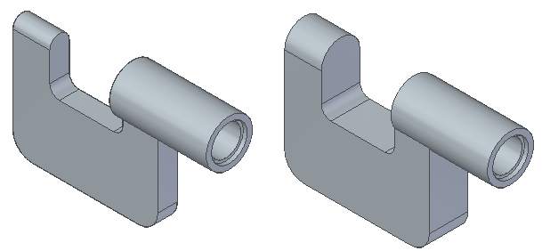
In PathFinder, click Protrusion 1, and then click the Dynamic Edit button.
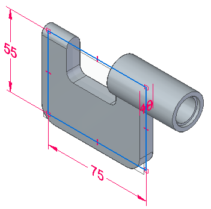
Click the dimension as shown.
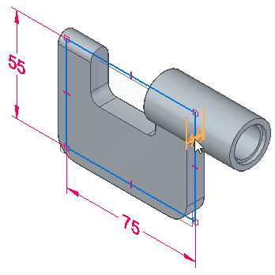
In the Dimension Value box, type 20 and click.
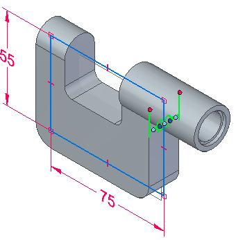
Click to finish the edit.
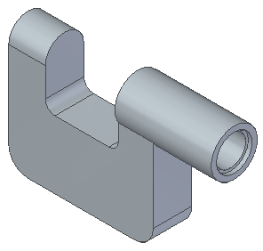
Press Esc to dismiss the Dynamic Edit command.